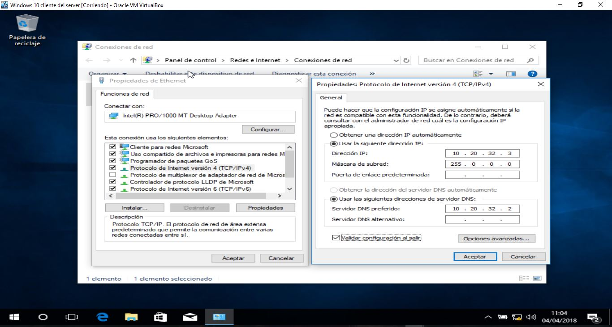
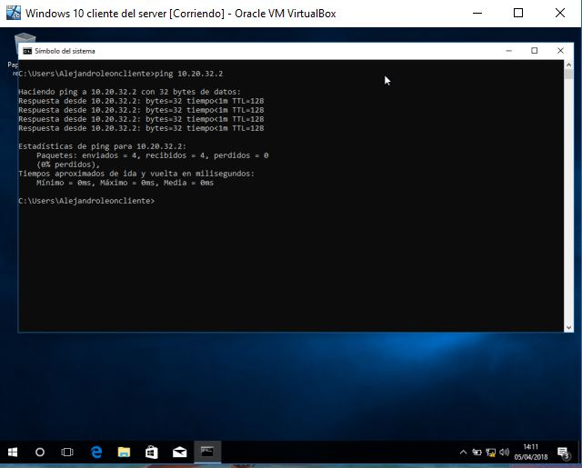
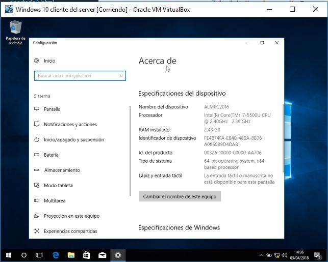

Apartado A
INCORPORACIÓN EQUIPOS AL DOMINIO:
INCORPORAR EQUIPOS AL DOMINIO:
Para poder utilizar las diferentes herramientas que ofrece un dominio, debemos establecerle los equipos desde los que se van a conectar los clientes, es decir, añadirselos al dominio.
Para poder hacer funcionar esto, hay tres pasos que son:
Establecer las conexiones de red oportunas para que la red vaya con su protocolo IPV4 Y DNS.
Debemos ajustar el nombre del equipo
Una vez ajustado debemos unirlo al dominio.
CONFIGURANDO LA RED EN EL CLIENTE:
En este caso le asignaremos una dirección ip por el protocolo IPV4 fija y también le asignaremos un servidor DNS que apunte a nuestra dirección ip de nuestro controlador del dominio.
Primero configuraremos la dirección ip del servidor para ello deberemos irnos a "PANEL DE CONTROL", después daremos click en "REDES E INTERNET", a continuación en "CENTRO DE REDES Y RECURSOS COMPARTIDOS" y dentro de ahí "CAMBIAR OPCIONES DEL ADAPTADOR" nos dirigiremos a "ETHERNET" y haciendo click en el botón derecho le daremos a "PROPIEDADES" seguidamente a "PROTOCOLO DE INTERNET VERSION 4" pulsamos otra vez en "PROPIEDADES" y seguidamente introducimos los valores de dirección IP... y su DNS.
 En el cliente lo configuraremos igual qué el servidor, lo único que varían son las direcciones IP y DNS.
En el cliente lo configuraremos igual qué el servidor, lo único que varían son las direcciones IP y DNS.

Para comprobar que se ha realizado correctamente podemos hacer un ping a nuestro servidor.
Si ingresamos el nombre del servidor en vez de la dirección ip correspondiente, veremos que nuestro equipo cliente se encuentra dentro de la red del servidor por lo que la configuración DNS fue correcta.

CAMBIANDO EL NOMBRE DE EQUIPO Y UNIÉNDOLO AL DOMINIO:
En el cliente debemos poner un nombre de equipo tal que coincida con un nombre de equipo asignado en el dominio, al indicarle el nombre del dominio el sistema efectuará las operaciones para poner en marcha el vínculo.
Para empezar haremos click en el botón derecho de nuestro raton sobre el botón de inicio, nos saldrán varias opciones y seleccionaremos "SISTEMA", en dicha ventana nos saldrán de nuevo varias opciones y congeremos la de "CAMBIAR CONFIGURACIÓN" y dentro de esa ventana cogeremos la opción de "CAMBIAR".
Donde nos indica "NOMBRE DE EQUIPO" en ese campo debemos escribir el nombre de la cuenta del dominio, y en la casilla de "MIEMBRO DEL" seleccionaremos la opción de "DOMINIO" y debajo le indicaremos escribiéndolo el nombre del dominio al que queremos unir el equipo cliente.

Nuestro sistema utilizado cómo se está viendo es "WINDOWS 10" por lo que Windows busca en la red el dominio qué le hemos especificado y si lo encuentra tendremos que escribir "NOMBRE DE USUARIO" y "CONTRASEÑA" qué pertenezcan al dominio, y eso si debe tener, debe tener los privilegios para poder unir el equipo al cliente.
Para finalizar reiniciaremos el sistema operativo tras haber guardado todos los datos qué hemos establecido y también cuando hayamos cerrado todos los programas que hayamos abierto con anterioridad, entonces una vez hecho ese procedimiento, reiniciaremos el sistema operativo.